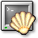

Contents
Up
Previous
Next
2.1 Opening a Console Window
To open a console window, press the screen-and-clamshell icon at the KDE panel.

A console window will pop up and you can move, minimize and resize it like any other window.
Contents
Up
Previous
Next